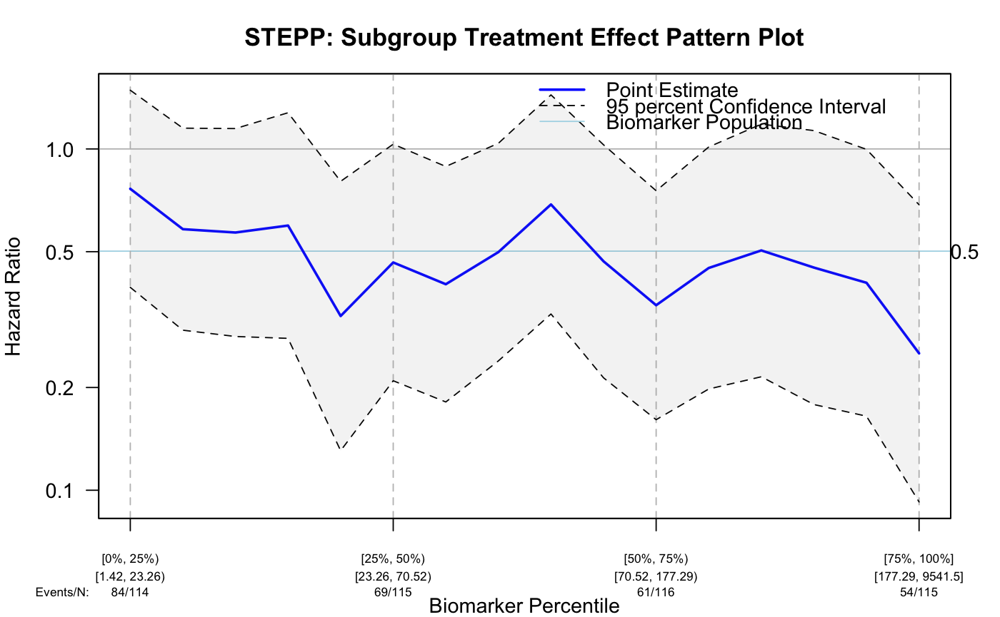

This function creates a STEPP from the given point estimates and confidence intervals at desired percentiles.
PlotSTEPP(data, outcome.var, outcome.class, trt = NULL, var, covariate = NULL, strata = NULL, placebo.code = NULL, active.code = NULL, quantile.type = 1, alpha = 0.05, window.width = 0.25, min.pt = NULL, max.pt = NULL, by = 0.05, yrange.lower = NULL, yrange.upper = NULL, xticks = NULL, show.refline = TRUE, refline.color = "grey", show.refline.ac = TRUE, refline.color.ac = "lightblue", estimate.color = "blue", estimate.lty = 1, estimate.lwd = 2, surv.conf.type = "plain", ties = "efron", ci.color = "black", ci.lty = 2, ci.lwd = 1, ci.shade = TRUE, plot.title = "STEPP: Subgroup Treatment Effect Pattern Plot", sub.title = NULL, xlabel = "Biomarker Percentile", ylabel = NULL, show.legend = TRUE, legend.loc = "topright", legend.text = c("Point Estimate", paste((1 - alpha) * 100, " percent Confidence Interval", sep = "")), legend.col = c(estimate.color, ci.color), legend.lty = c(estimate.lty, ci.lty), legend.lwd = c(estimate.lwd, ci.lwd), legend.bty = "n", bm.digits = 2, actual.scale = FALSE, equal.in.LL = TRUE, equal.in.UL = FALSE, pdf.name = NULL, pdf.param = list(width = 11, height = 8.5), par.param = list(mar = c(4, 4, 3, 2)), csv.name = NULL)
| data | input data frame. Rows are patients and columns are variables (e.g. demographics variables, time to event variables, biomarker variables, treatment indicator, etc.). One patient per row. |
|---|---|
| outcome.var | outcome variable. In case of a 'survival', variable, it will be a vector of two variables: 1) time to event 2) censorship |
| outcome.class | outcome class of the 'outcome' variable. Can be either "continuous", "binary", or "survival". |
| trt | name of the treatment variable. |
| var | name of the biomarker variable. |
| covariate | vector specifying the covariate variables. This can be added to adjust for in the analysis for survival and continuous outcome variable classes. |
| strata | vector specifying the stratification variables. This can be added for the survival outcome variable class. |
| placebo.code | name of the control group within the treatment variable |
| active.code | name of the treatment/experimental group within the treatment variable |
| quantile.type | an integer between 1 and 9 selecting one of the nine quantile algorithms. See |
| alpha | confidence level (CI) for point estimate, i.e. 0.05 for 95 percent CI. Default is 0.05. |
| window.width | width of each window. Default is 0.25. |
| min.pt | minimum center.pt. Default is NULL. |
| max.pt | maximum center.pt. Default is NULL. |
| by | size of 'slide', i.e. speed of the window that moves along the x-axis. Default is 0.05. |
| yrange.lower | value of the lower y-axis. Default is NULL. |
| yrange.upper | value of the upper y-axis. Default is NULL. |
| xticks | x-tick marks. Default is NULL. |
| show.refline | if TRUE, the reference line will be displayed. Default is TRUE. |
| refline.color | color of the reference line. Default is "grey". |
| show.refline.ac | if TRUE, the reference line for effect in All Comers will be displayed. Default is TRUE. |
| refline.color.ac | color of the reference line for effect in All Comers. Default is "lightblue". |
| estimate.color | color of the estimate line. Default is "blue". |
| estimate.lty | type of the estimate line. Default is 1. |
| estimate.lwd | width of the estimate line. Default is 2. |
| surv.conf.type | confidence interval type. Default is "plain". see conf.type in survfit. |
| ties | Default is "efron". To match internal sas results, use "exact". See parameter "ties" in coxph. |
| ci.color | color of the CI lines. Default is "black". |
| ci.lty | type of the CI lines. Default is 2. |
| ci.lwd | width of the CI lines. Default is 1. |
| ci.shade | if TRUE, the area between the lower and upper CI lines will be shaded in gray. Default is TRUE. |
| plot.title | title of the plot. Default is "STEPP: Subgroup Treatment Effect Pattern Plot". |
| sub.title | subtitle of the plot, this will be displayed on the bottom of the plot. Default is NULL. |
| xlabel | x-axis label. Default is "Biomarker Percentile". |
| ylabel | y-axis label. Default is NULL. |
| show.legend | if TRUE, a legend will be displayed. Default is TRUE. |
| legend.loc | location of the legend to be displayed. Default is "topright". |
| legend.text | text to be displayed in the legend.
Default is |
| legend.col | colors of the legend. Default is |
| legend.lty | type of the legend lines. Default is |
| legend.lwd | width of the legend lines. Default is |
| legend.bty | type of box for the legend. Default is "n". |
| bm.digits | digits to be displayed/used for the lower and upper confidence level estimates. Default is 2. |
| actual.scale | if TRUE, it generates the figure using the actual scale instead of the scale in percentage. Default is FALSE. |
| equal.in.LL, equal.in.UL | if both are TRUE, window is defined using >= and <= (in legend: " |
| pdf.name | name of output pdf file. If it's NULL (default), the plots will be displayed but not saved as pdf. |
| pdf.param | a list of parameters that define pdf graphics device. See |
| par.param | a list of parameters that define graphcial parameters. See |
| csv.name | csv file name (includes numbers used in the graphs). If NULL (default), the function will return the result. |
Patient data without corresponding biomarker data are automatically removed. For survival data, censorship variable is 1 if an event happened, 0 if censored.
data(input) PlotSTEPP(data = input, outcome.var = c("PFS", "PFS.event"), outcome.class = "survival", trt = "Arm", var = "KRAS.exprs", covariate = "Sex", strata = "Age", placebo.code = "CTRL", active.code = "TRT")#>#> Window Center Hazard Ratio CI Lower CI Upper BM Lower BM Upper #> [1,] 0.125 0.7642152 0.39302168 1.4859863 1.42 23.26 #> [2,] 0.175 0.5819844 0.29440504 1.1504757 5.98 32.00 #> [3,] 0.225 0.5689871 0.28217046 1.1473430 9.51 42.81 #> [4,] 0.275 0.5964071 0.27864024 1.2765618 14.03 48.84 #> [5,] 0.325 0.3239406 0.13059207 0.8035518 19.70 59.30 #> [6,] 0.375 0.4649164 0.20932533 1.0325902 23.26 70.52 #> [7,] 0.425 0.4014342 0.18140637 0.8883340 32.00 77.71 #> [8,] 0.475 0.4986038 0.23932507 1.0387784 42.81 95.01 #> [9,] 0.525 0.6876529 0.32841692 1.4398362 48.84 121.94 #> [10,] 0.575 0.4684978 0.21350729 1.0280220 59.30 151.17 #> [11,] 0.625 0.3484114 0.16096197 0.7541564 70.52 177.29 #> [12,] 0.675 0.4479287 0.19800748 1.0132959 77.71 213.78 #> [13,] 0.725 0.5042094 0.21505439 1.1821529 95.01 259.57 #> [14,] 0.775 0.4491989 0.17829731 1.1317032 121.94 317.37 #> [15,] 0.825 0.4054058 0.16483676 0.9970705 151.17 467.88 #> [16,] 0.875 0.2518241 0.09241627 0.6861927 177.29 9541.50 #> BM Center Window Left Window Right N Events #> [1,] 11.010 0.00 0.25 114 84 #> [2,] 16.450 0.05 0.30 115 84 #> [3,] 21.860 0.10 0.35 115 85 #> [4,] 27.860 0.15 0.40 115 78 #> [5,] 36.250 0.20 0.45 115 73 #> [6,] 45.250 0.25 0.50 115 69 #> [7,] 53.265 0.30 0.55 114 59 #> [8,] 64.450 0.35 0.60 115 59 #> [9,] 73.010 0.40 0.65 115 63 #> [10,] 88.030 0.45 0.70 115 62 #> [11,] 101.480 0.50 0.75 116 61 #> [12,] 133.900 0.55 0.80 116 61 #> [13,] 165.420 0.60 0.85 115 55 #> [14,] 195.360 0.65 0.90 115 51 #> [15,] 238.860 0.70 0.95 115 56 #> [16,] 292.040 0.75 1.00 115 54